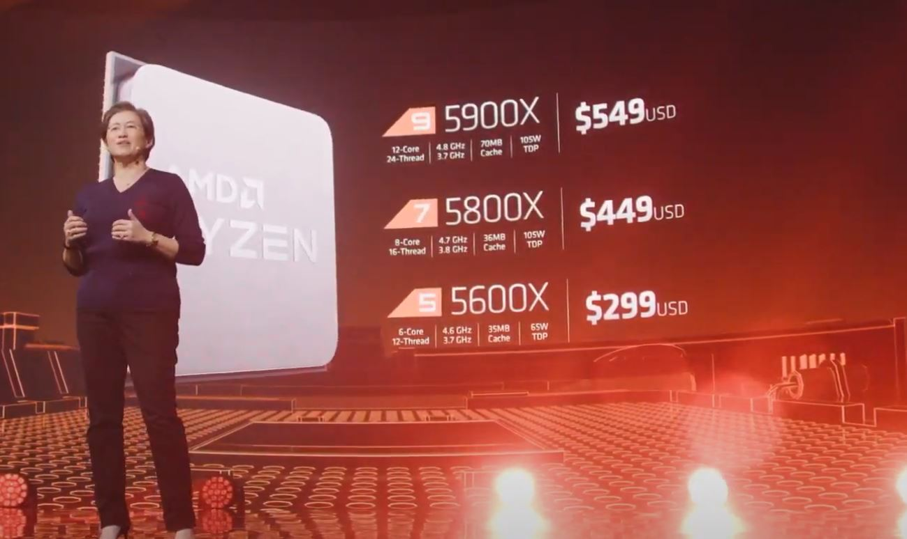
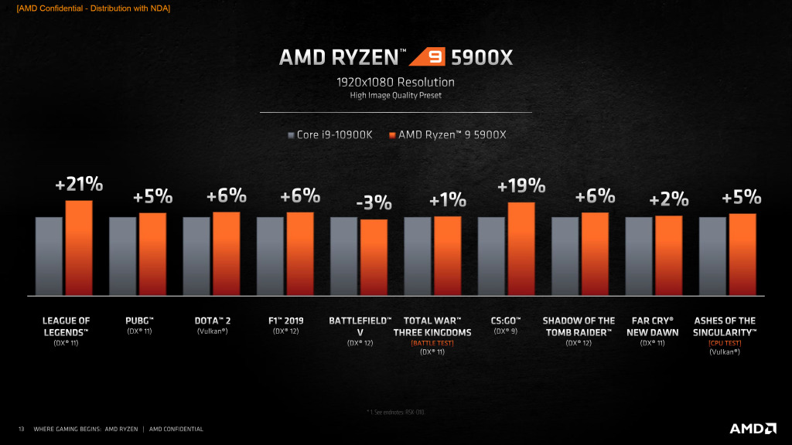

AMD 5000 Series Launch
AMD Ryzen 5000 is officially here, hitting the streets on November 5, 2020. A big focus for this newly-launched lineup of processors is on gaming, and for good reason – AMD has finally dethroned Intel when it comes to raw gaming performance. However, because it's 2020 and everything is selling out, we've put together some guides to help you find stock – if there is any.
The new CPU lineup is led by the AMD Ryzen 9 5950X, a high-end chip packed with 16 cores and 32 threads, with a whopping 4.9GHz boost clock. That's a pretty massive generational leap over the Ryzen 9 3950X already, before you consider the boost to IPC (instructions per clock) performance, thanks to the massive Zen 3 redesign.
Now that all the processors have hit the streets and we're in the process of running all of them through our lab, we can share everything you need to know if you want to upgrade to AMD's new hotness.
AMD Ryzen 5000 series processors hit the streets on November 5, 2020, heralded by the AMD Ryzen 9 5950X and Ryzen 9 5900X. However, we've seen some availability issues, and it could be a while before you can get your hands on them.
It could also mean we get some great Black Friday deals for the older AMD processors as well. That deals bonanza is at the end of November.
Zen 3 marks one of the biggest architecture redesigns we've seen in a single generation. These new AMD Ryzen 5000 processors are still based on the same 7nm manufacturing process as the Ryzen 3000 chips that hit the market in 2019.
The main focus of this redesign was to boost IPC performance in order to attain single-core performance that could finally topple Intel. While a good portion of this was through incredibly complicated work reducing prediction latency and implementing faster code fetching, a huge part of it is the way AMD redesigned the die itself.
You see in AMD Zen 2 processors, each Compute Die (CCD) had two Core Complexes (CCX), which each had 4 cores and 16MB of L3 cache. This means in single-core workloads, the core would only have direct access to 16MB of cache, and would have to reach outside of the CCX if more was needed. With Zen 3, however, each CCX now has 8 cores and 32MB of L3 cache, so the amount of cache that each individual core has direct access to has doubled. This cuts latency down dramatically and boosts single-core performance higher than we've ever seen.
For instance, in our testing, the AMD Ryzen 9 5900X is around 15-20% faster than the Ryzen 9 3900X in single-core benchmarks, and manages to completely obliterate the Intel Core i9-10900K pretty much across the board.
This obviously also results in faster gaming performance, too, as the best PC games are still heavily dependent on clock speed and single-core performance. In our testing, both the Ryzen 9 5900X and Ryzen 7 5800X were about 7-9% faster than the Core i9 10900K in the games we tested. We haven't seen this much of a jump in gaming performance for processor in a while, and it mean that AMD now makes the best processor for gaming.
Here are the AMD 5000 series Processor Specs & Benchmark
- Ryzen 5 5600x: 6 Core, 12 Thread, 4.6GHz boost, 35mb cache, 65W TDP
- Ryzen 7 5800x: 8 Core, 16 Thread, 4.7GHz boost, 36mb cache, 105W TDP
- Ryzen 9 5900x: 12 Core, 24 Thread, 4.8GHz boost, 70mb L2+L3 cache, 105W TDP
- Ryzen 9 5950x: 16 Core, 32 Thread, 4.9GHz boost, 72mb L2+L3 cache, 105W TDP